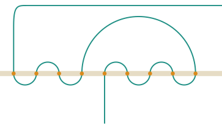

Table 2 compares the algorithms. Times are wall-clock on an Apple-silicon laptop for computing all values up to the given . The specification itself is evaluable only for very small .
| Algorithm | largest | time |
|---|---|---|
| search, crossing test only (compiled) | 15 | 72 s |
| search with parity pruning (compiled) | 15 | 5 s |
| 17 | 62 s | |
| transfer matrix (compiled) | 24 | 1.3 s |
| 28 | 11 s | |
| 30 | 32 s | |
| 32 | 93 s | |
| search, kernel evaluation | 9 | 30 s for alone |
| transfer matrix, kernel evaluation | 13 | 68 s for alone |
The repository certifies values at two levels of trust. The statement
is proved by evaluation in the Lean kernel, through Theorem 5.1 applied
to the insertion-merge variant, and the corresponding closed values
follow by Theorem 3.2. Values up to
are proved with native_decide, which additionally trusts
the Lean compiler. The compiled transfer matrix produces
and all values for
agree with the OEIS b-file. The executable is the same function that the
correctness theorem is about, so these values carry the guarantee of
Theorem 5.1 up to the correctness of compilation.

The repository contains the algorithms in five languages. Only the Lean programs are verified; the others run the same machine and are checked against the certified values and the OEIS.
Lean. The specification (evaluable by brute force for
),
the search meanderCount with its array implementation
substituted by csimp, and the transfer matrix in two
variants: tmCount, compiled into the executable
meanders, and tmCountK, evaluated by the
kernel.
Rust (rust/). The transfer matrix with a
packed state. Read along the cut from top to bottom, the open arcs pair
up like brackets, because the pieces of river west of the cut never
cross. So a state is a bracket word with at most one marker for the arc
that leads to the east end, plus the number of arcs above the road, and
fits in 64 bits for
.
Each layer is split into 4096 hash shards, each an open-addressing table
behind its own lock; worker threads claim source shards, batch
successors per target shard, and free each source shard once read, so
memory holds about one layer. Tables grow on demand, or, with an option,
are allocated once at a size predicted from the previous layers’ growth.
Counts are kept modulo
and, from
,
also modulo
,
and recovered by the Chinese remainder theorem.
OxCaml (oxcaml/). The same algorithm in
OxCaml, Jane Street’s extension of OCaml. Workers run under OxCaml’s
Parallel scheduler, shards are capsules guarded by mutexes,
and the compiler’s mode system rules out data races. The state is an
immediate 63-bit integer, the hot loop allocates nothing on the heap,
and tables are flat arrays of unboxed values that the garbage collector
never scans.
Python and OCaml. Companion notebooks teach each language by building the specification, the parity search and the transfer matrix from scratch, with the state as a string or a list of constructors and layers in hash tables, run on all cores with process pools (Python) and domains (OCaml 5). A third notebook teaches Lean with the library’s own declarations.
Table 3 times the parallel programs on a workstation with an 18-core
Intel Xeon W-2191B (36 threads) and 128 GB of memory, one value per run
on all threads; on the same machine the verified meanders
computes all values up to
in 160 s. Every count equals the OEIS term; in particular
Memory is the limit: the largest layer for
holds
states, and
is the largest value that fits in 128 GB, at about 35 bytes per state.
Table 4 shows that the programs scale to the physical cores and no
further, as expected for work dominated by random memory access.
The OxCaml program is faster than the Rust program in its default mode, and the difference is one design choice. By default Rust grows each shard’s table by half when it is 80% full, so every state is moved several times as its table grows; OxCaml predicts each layer’s size from the growth of the previous layers and allocates every table once. With the same prediction (Rust’s pre-sizing option), Rust is 20–28% faster at every thread count, including one, so the saving is the rehashing work itself rather than time spent waiting on locks. Pre-sized Rust is then the fastest program for and on a single thread; OxCaml keeps an edge for small on many threads, plausibly because it keeps one pool of workers and their buffers for the whole run, while Rust starts its threads and allocates their batch buffers for every point. Pre-sizing costs memory, since each table is allocated at its final size while the previous layer is still draining (17.0 against 12.6 GiB at ); OxCaml needs more still (20.5 GiB), because its freed tables are returned only after a major garbage collection. Rust grows on demand by default, so that the largest fits in memory. The teaching implementations are far slower: interpreted Python computes all values up to in about twelve seconds on the laptop, and the OCaml notebook’s transfer matrix, run as bytecode on ten domains, takes about half a second for .
| largest layer | Rust | pre-sized | OxCaml | ||
|---|---|---|---|---|---|
| 40 | 3.6 s | 2.9 s | 2.2 s | ||
| 42 | 6.1 s | 5.3 s | 5.3 s | ||
| 44 | 30 s | 22 s | 25 s | ||
| 46 | 80 s | 57 s | 65 s | ||
| 49 | 516 s | ||||
| 50 | 1052 s |
| threads | 1 | 4 | 9 | 18 | 36 |
|---|---|---|---|---|---|
| Rust | 21.3 s | 6.1 s | 3.5 s | 3.0 s | 3.3 s |
| Rust, pre-sized | 17.0 s | 4.8 s | 2.8 s | 2.4 s | 2.9 s |
| OxCaml | 20.4 s | 5.6 s | 2.8 s | 2.2 s | 2.3 s |